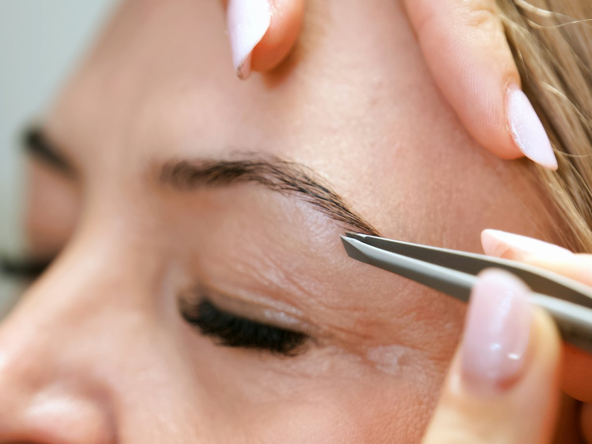
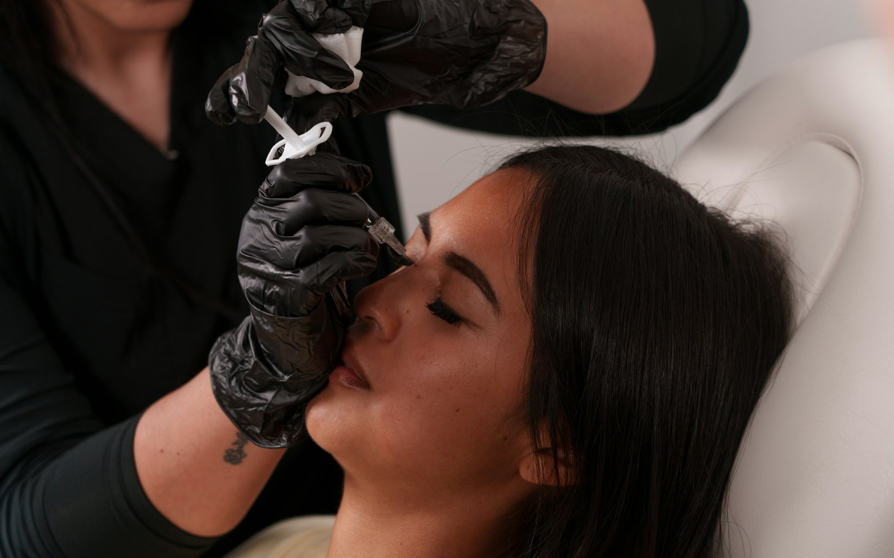
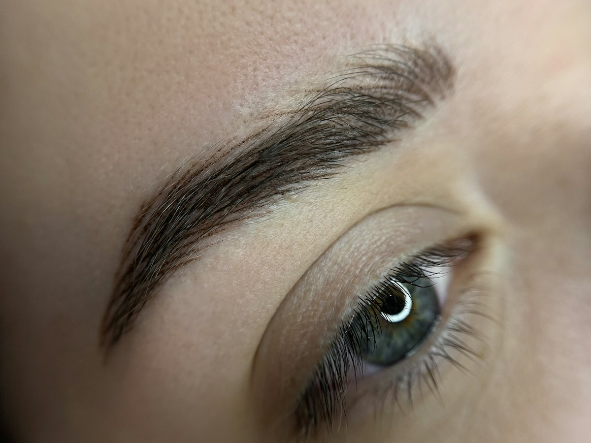
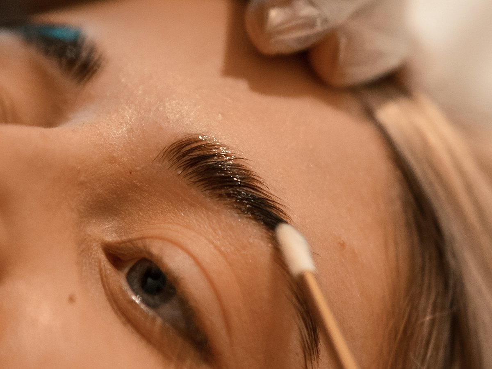
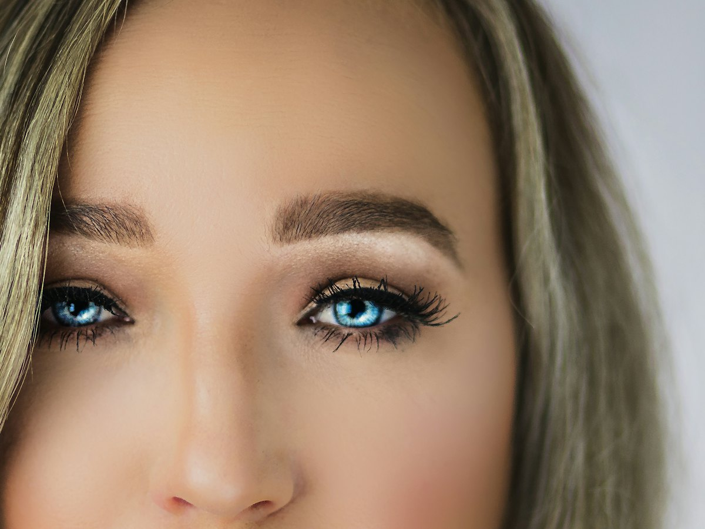
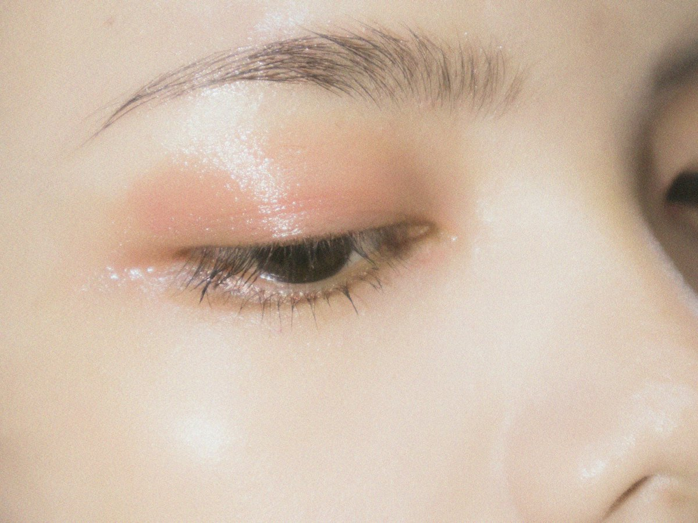
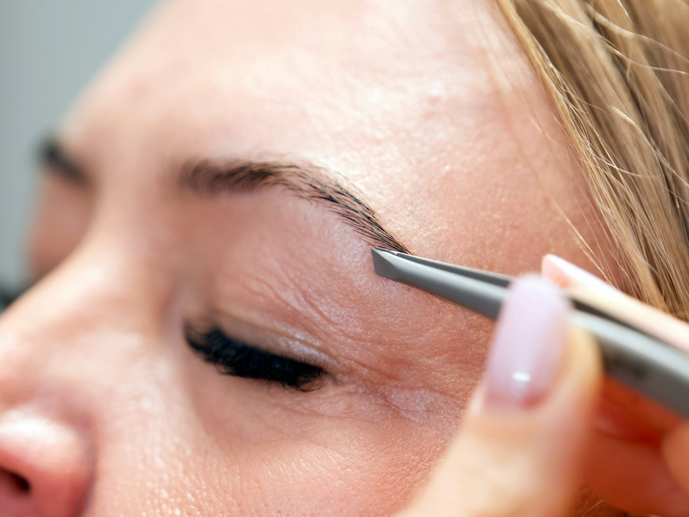
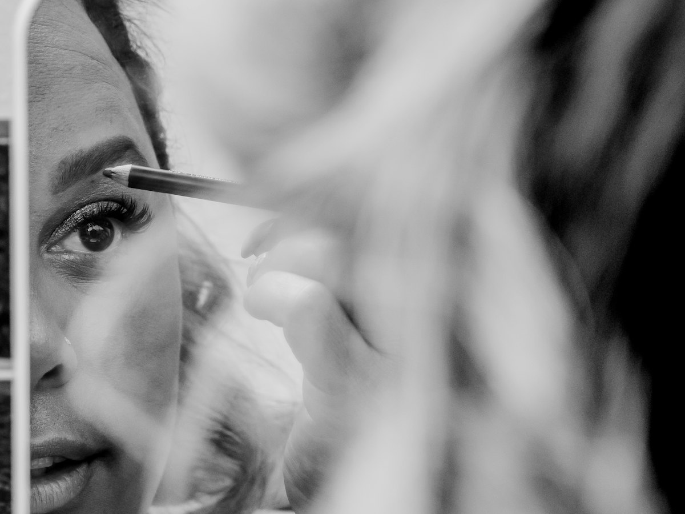
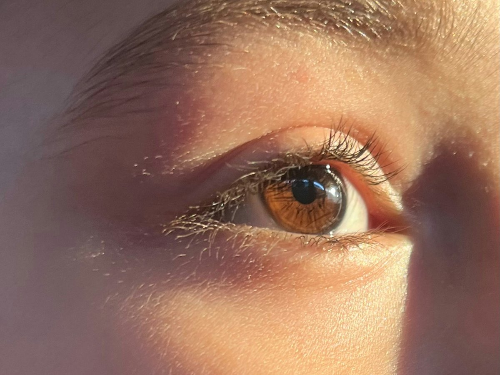
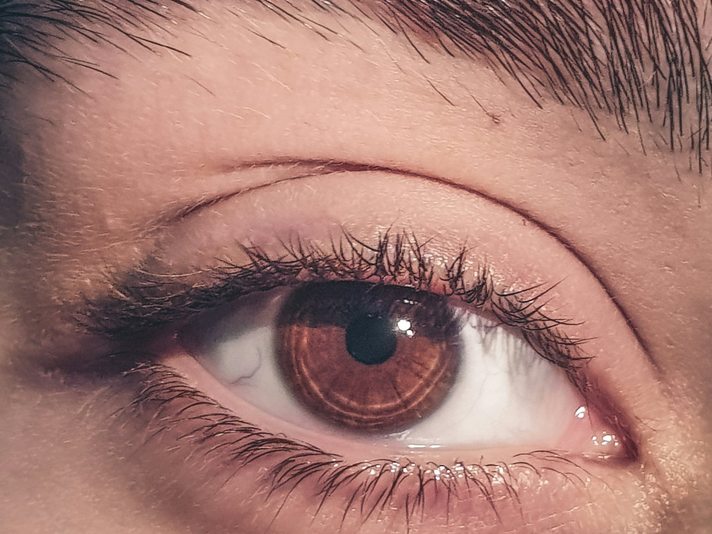

Design de sobrancelha
Medição, desenho e acabamento fio a fio, respeitando o formato do seu rosto.
Quero esse
Neide Brito Sobrancelhas
Design de sobrancelha e micropigmentação em São José do Rio Preto, com atendimento feito por mim do começo ao fim.
3,9 mil pessoas acompanham o trabalho da Neide no Instagram
Do desenho feito na medida do seu rosto até a sobrancelha que fica pronta todos os dias. Toque no serviço e a mensagem já vai escrita.

Medição, desenho e acabamento fio a fio, respeitando o formato do seu rosto.
Quero esse
Preenche falhas e define o desenho para você acordar com a sobrancelha pronta.
Quero esse
Cor temporária que realça o desenho e disfarça pequenas falhas.Serviço de exemplo
Quero esse
Revisão do desenho e da cor para manter a micropigmentação sempre bonita.Serviço de exemplo
Quero esseFotos ilustrativas. Design de sobrancelha e micropigmentação são os serviços do perfil da Neide; os outros dois são exemplos. No site final entram a lista completa e as fotos dos trabalhos dela.
A dúvida mais comum de quem chega. Um resumo para você saber por onde começar.
Texto de exemplo. No site final entram as técnicas, os cuidados e as explicações da própria Neide.
É assim que eu me apresento no Instagram, e é assim que funciona o atendimento: você fala direto comigo, do primeiro “oi” no WhatsApp até o acabamento final.
Eu cuido tanto do design quanto da micropigmentação, então consigo indicar o que combina com a sua sobrancelha hoje e o que vale fazer depois.
Texto de exemplo. No site final entram a história, a formação e as palavras da Neide.
Falar com a Neideseguidores acompanham os trabalhos em @neidebritosobrancelhas
Atendimento em São José do Rio Preto, com hora marcada pelo WhatsApp.
Fotos ilustrativas. No site final entram os antes e depois publicados no Instagram da Neide.





A agenda da Neide é pelo WhatsApp. Leva poucos minutos.
No site final entram o endereço completo do espaço e os horários de atendimento.
Pelo design. Ele mostra o formato que combina com o seu rosto e serve de base se um dia você quiser fazer a micropigmentação.
A sensação varia de pessoa para pessoa. A Neide explica cada etapa antes de começar e tira suas dúvidas pelo WhatsApp.
Normalmente sim. O retoque ajusta a cor e o desenho depois que a pele cicatriza. A Neide combina a data com você.
Pelo WhatsApp (17) 99129-9368. É só mandar mensagem dizendo o serviço e o melhor dia para você.
Respostas de exemplo. No site final entram as orientações da Neide.